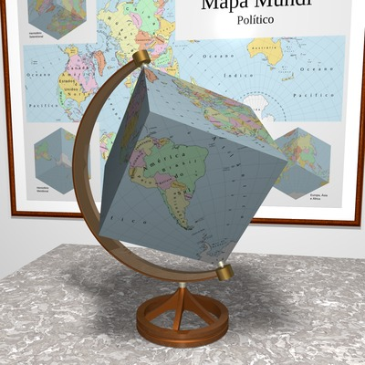

将地球改造成奇异行星
原文链接:: Polyhedral Maps
介绍
在将球面转换为平面图时，已经提出了几种减少失真的方法，包括:
- 首先将球体映射成一个中间的零高斯曲率表面，如圆柱体或圆锥体，然后将该表面转换为一个平面
- 对球体进行部分切割，并将每个分割点分别投射到一个间断的地图中。
这两种技术在多面体地图中被结合起来。
- 将球体刻在多面体中，然后将球体的各个区域分别投影到每个多面体面上
- 可以选择将多面体切割并展开成一个平面地图，通常称为多角形 "网"
直观地说，多面体地图中的畸变在顶点和边附近更大，多面体离内接球体更远；此外，增加面的数量可能会减少扭曲(毕竟，一个球体相当于一个有无限多个面的多面体)。但是，过多的面会在展开的地图中产生额外的间隙和方向变化，从而大大降低其有用性。
多面体地图与“多面体”投影完全无关，在1900年左右的几个变体中用于大规模制图；本质上，他们把球体映射成小的独立的梯形区域，如果连接起来，就构成了多面体的一部分。
